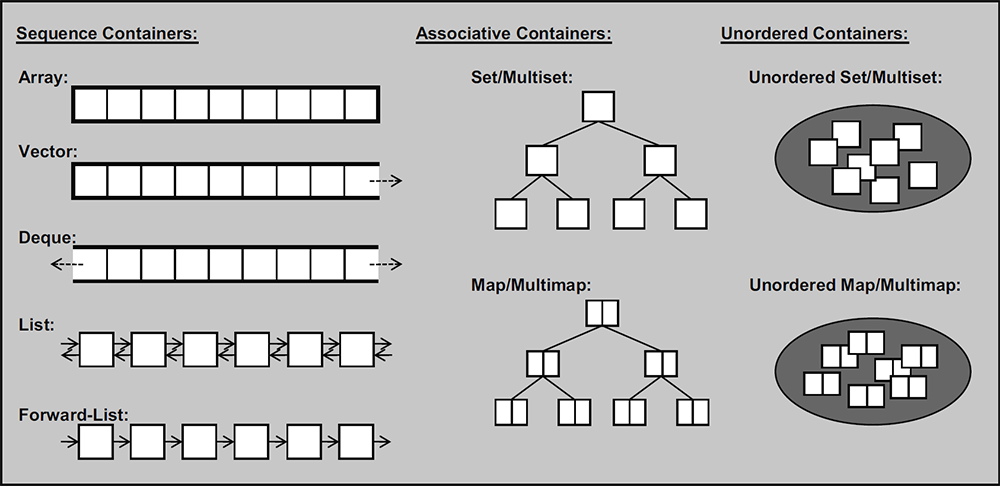

Container
分类

序列式容器
- 向量(
vector) 后端可高效增加元素的顺序表。 - 数组(
array)C++11，定长的顺序表，C 风格数组的简单包装。 - 双端队列(
deque) 双端都可高效增加元素的顺序表。 - 列表(
list) 可以沿双向遍历的链表。 - 单向列表(
forward_list) 只能沿一个方向遍历的链表。
关联式容器
- 集合(
set) 用以有序地存储 互异 元素的容器。其实现是由节点组成的红黑树，每个节点都包含着一个元素，节点之间以某种比较元素大小的谓词进行排列。 - 多重集合(
multiset) 用以有序地存储元素的容器。允许存在相等的元素。 - 映射(
map) 由 {键，值} 对组成的集合，以某种比较键大小关系的谓词进行排列。 - 多重映射(
multimap) 由 {键，值} 对组成的多重集合，亦即允许键有相等情况的映射。
什么是谓词 (Predicate)？
谓词就是返回值为真或者假的函数。STL 容器中经常会使用到谓词，用于模板参数。
无序（关联式）容器
- 无序（多重）集合(
unordered_set/unordered_multiset)C++11，与set/multiset的区别在于元素无序，只关心「元素是否存在」，使用哈希实现。 - 无序（多重）映射(
unordered_map/unordered_multimap)C++11，与map/multimap的区别在于键 (key) 无序，只关心 "键与值的对应关系"，使用哈希实现。
容器适配器
容器适配器其实并不是容器。它们不具有容器的某些特点（如：有迭代器、有 clear() 函数……）。
「适配器是使一种事物的行为类似于另外一种事物行为的一种机制」，适配器对容器进行包装，使其表现出另外一种行为。
- 栈(
stack) 后进先出 (LIFO) 的容器，默认是对双端队列（deque）的包装。 - 队列(
queue) 先进先出 (FIFO) 的容器，默认是对双端队列（deque）的包装。 - 优先队列(
priority_queue) 元素的次序是由作用于所存储的值对上的某种谓词决定的的一种队列，默认是对向量（vector）的包装。
共同点
容器声明
都是 containerName<typeName,...> name 的形式，但模板参数（<> 内的参数）的个数、形式会根据具体容器而变。
本质原因：STL 就是「标准模板库」，所以容器都是模板类。
迭代器
请参考 迭代器。
共有函数
=：有赋值运算符以及复制构造函数。
begin()：返回指向开头元素的迭代器。
end()：返回指向末尾的下一个元素的迭代器。end() 不指向某个元素，但它是末尾元素的后继。
size()：返回容器内的元素个数。
max_size()：返回容器 理论上 能存储的最大元素个数。依容器类型和所存储变量的类型而变。
empty()：返回容器是否为空。
swap()：交换两个容器。
clear()：清空容器。
==/!=/</>/<=/>=：按 字典序 比较两个容器的大小。（比较元素大小时 map 的每个元素相当于 set<pair<key, value> >，无序容器不支持 </>/<=/>=。）